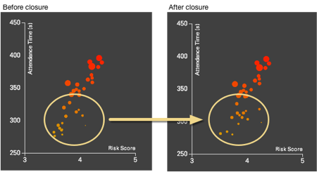

The primary aim of this project was to investigate whether it might now be possible to build open tools, using open data that could be deployed by policy makers considering changes to public services - but which also could be open to the general public.
Can we build tools that aid policy makers and are open to the public? This is the primary aim of this project. We created a tool, based on open data, where everyone can explore changes to emergency services in London.
Emergency services across the country (and worldwide) have been using consultations and computer modelling to make decisions about how they plan future provision. Unfortunately, this work is going on largely behind closed doors. This makes it hard for planners to show the evidence for their choices and for those who are interested to test or replicate the predicted impacts. Transparency, and credibility, comes from evidence that is accessible.
One of the core missions of the ODI is to show how open data can bring social, environmental and economic benefits to society. There is great potential of creating value when we combine open datasets from the public and the private sector. This is why we were keen to explore a collaboration with a commercial partner, Telefónica Dynamic Insights. They were prepared to release some of its data as open data. We then combined their data with relevant public sector data.
With ten fire stations to close in London, there was a clear case to investigate the potential of developing tools that apply to a live "use case".
Additionally, while similar work has been carried out before, the vast majority has been done behind closed doors. We wanted see if it was possible to carry out an analysis using open data and in an open way, making the analysis and the tools as easily accessible to both policy-makers and citizens as possible.
With a very short time scale for the project, being able to refer scientifically to existing work allowed us to speed up our own reseach while critically evaluating our findings against that of others.
Firstly it is important to emphasise that this project was carried out in a very short time scale and while we have made every effort to peer review our mathematical models, there is still work to be done in this area before we can draw any solid conclusions. It is also important to note that this is the first time that commercially available data on actual footfall has been used alongside open government data, thus there is no previous work openly available to refer to or learn from. As such we currently offer no guarantees over the accuracy of the results themselves.
Broadly speaking our results appear to reflect those of the in-depth consultation carried out for the London Fire Brigade using only a fraction of the data that is available as open data.
This is self-evident by the changes in the map before and after simulating the closure of the ten stations. Only very few boroughs change their expected response times to a point that the different colour grades can be easily recognised in the overall view of London.
Boroughs that do change their risk score more substantially can then be studied further just by looking at their detailed data, as in the Southwark example below.
Rather than the map, comparing the histograms, showing past and expected distribution of the attendance times, demonstrates how risk changes. The histogram also highlights the data vs LFB’s own 6 minutes target for the first pump to attend an incident.

When we combine attendance time (from the first score) with the number of people potentially impacted by the incidents the overall picture once again changes only slightly after closing the ten stations. Relatively less populous boroughs such as Lewisham actually score better than by looking at the response time only.

This is further confirmed by the bubble chart changes, before and after closure, where each borough is represented by a circle whose area is proportional to the number of people potentially impacted by an incident.

It is clear that open data is extremely valuable in order to allow citizens and bodies interested in public welfare such as ourselves to carry out their own analysis. Being able to combine open government data with relevant commercial data provides an unparalleled level of transparency that has never been seen before. But we are not done yet, there are still many datasets not available that would only improve the analysis of this data.